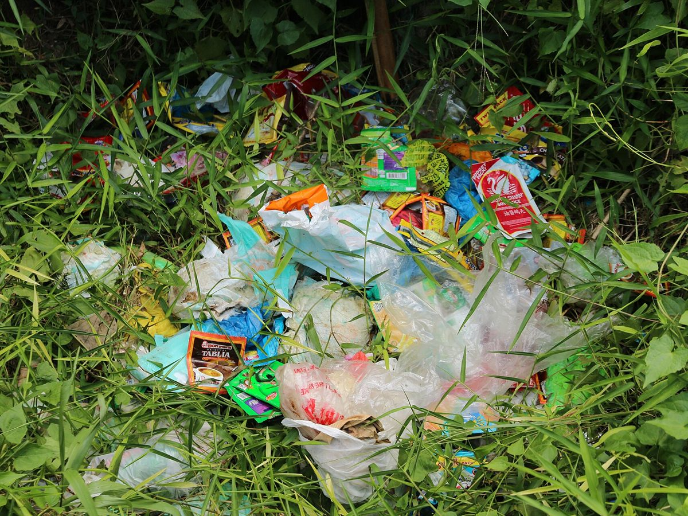

Sachet economy
Critique
Affordable today, plastic waste for a long time after.
Small packs make goods affordable today, but the bigger pack can cost less per unit, and every sachet becomes plastic waste.
Ano’ng sasagutin ng kwentong ito
- Does a sachet really cost more per gram than a bigger pack?
- Where do the empty sachets end up?
- Who profits most from selling in small packs?
Walk along a sari-sari store and you will see them hanging in strips: shampoo, coffee, detergent, soy sauce, all in sachets small enough to buy with a few coins. Sachets are what make a product affordable today.
Does a small pack cost more for the same amount? The evidence is mixed. A P&G executive interviewed for a 2011 study said, “The bigger the size, the lower the price per unit, but then the tradeoff is it would be more expensive in terms of cash outlay.” In a 2025 government price bulletin, a 25 g coffee refill cost ₱21.60 and a 50 g refill ₱42.20: about ₱0.86 a gram against ₱0.84. But a 2013 newspaper column found six 10 ml shampoo sachets (60 ml) at ₱29.25 while the 670 ml bottle cost ₱378, which makes the sachets the cheaper ones per milliliter (about ₱0.49 against ₱0.56). So a sachet is not always the worse deal per gram. It is the deal a family with a few coins can afford.
Then there is what is left behind. GAIA, an environmental network, estimated in 2019 that Filipinos throw away about 164 million sachets a day, close to 60 billion a year, based on household waste audits. GAIA’s 2020 report describes sachets as difficult to recycle and costly for cities to manage. They are light, they slip away from collection, and they clog drains and pollute waterways. Every sachet that makes a day easier becomes a piece of waste that lasts far longer.
So who benefits? Small packs let companies sell to buyers who could not pay for a big one. GAIA’s Miko Aliño says corporations “have greatly benefited from these products” without being held accountable for the pollution. The tindera earns a small margin on each pack. The family pays for convenience, and the neighborhood lives with the waste. We are not blaming the person who buys a sachet, because the price tag decides the choice. We are asking why a system works this way.

“Mura nga, pero saan napupunta ’yung plastic?”
Pinagkunan
Global Alliance for Incinerator Alternatives. (2019, March 7). Plastics Exposed: How Waste Assessments and Brand Audits are Helping Philippine Cities Fight Plastic Pollution, Table 7.
Liamzon, C., Benosa, S., Aliño, M., & Baconguis, B. (2020, July). Sachet Economy: Big Problems in Small Packets. GAIA.
Philippine Department of Trade and Industry. (2025, February 1). Suggested Retail Prices of Basic Necessities and Prime Commodities (coffee refill entries).
Alano, C. M. (2013, February 5). The battle between the bottle and the sachet. The Philippine Star.
Sy-Changco, J. A., Pornpitakpan, C., Singh, R., & Bonilla, C. M. (2011). Managerial insights into sachet marketing strategies and popularity in the Philippines. Asia Pacific Journal of Marketing and Logistics, 23(5), 755–772. https://doi.org/10.1108/13555851111183129
Pahina 5 / 5